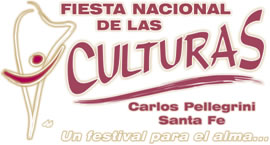

La cultura es
El viernes viajé a mi pueblo, llegué al rededor de las 10 de la noche y para las 11 ya estaba en la Fiesta Nacional de las Culturas.
El programa, como dice su sitio web, era:
Viernes 28 de diciembre: Espectáculos de Música y Danza de la región y las presentaciones de los Elencos de "Kumelén":
- Murga "Los Piamtados".
- Ballet Juvenil "Sueñero".
- "Por Vos", música popular.
- "Ballet Popular Sueñero".
- Perdón Tango", Carlos Pellegrini.
- "Casitango", Piamonte.
- "Intentango", El Trébol.
- "Andando", Carlos Pellegrini.
- "Nunamanta" ("desde el alma", en quichua), Piamonte.
- "Makipura" ("mano con mano", en quichua), El Trébol.
En el programa no parece haber nada fuera de lo común, artista prodigioso o número internacional que justifique viajar casi 4 horas un viernes por la tarde. Sin embargo tenía una razón.
La semana anterior mi amigo Juan Manuel me había invitado a escucharlo cantar. El grupo del que forma parte se llama Canto Grupal y no es una banda de rock, un coro gregoriano o una escuela de canto. Es un grupo de gente que se junta a cantar por que les da placer, por que les gusta.
En mi opinión fue lo mejor de la noche. No por que sus voces sean excelentes, el acompañamiento de guitarras ejemplar o la afinación perfecta. Sino por que se trataba de una fiesta de la Cultura, y esa es justamente una de las mejores definiciones de Cultura: personas expresándose por placer.
Podés cantar, escribir o dibujar. O lo que se te ocurra, pero no dejes de expresarte.
Y así termina la reflexión del día, dejando la web para trabajar un poco en mis cuentos y escuchando a León Gieco.
Comentarios
Comments powered by Disqus